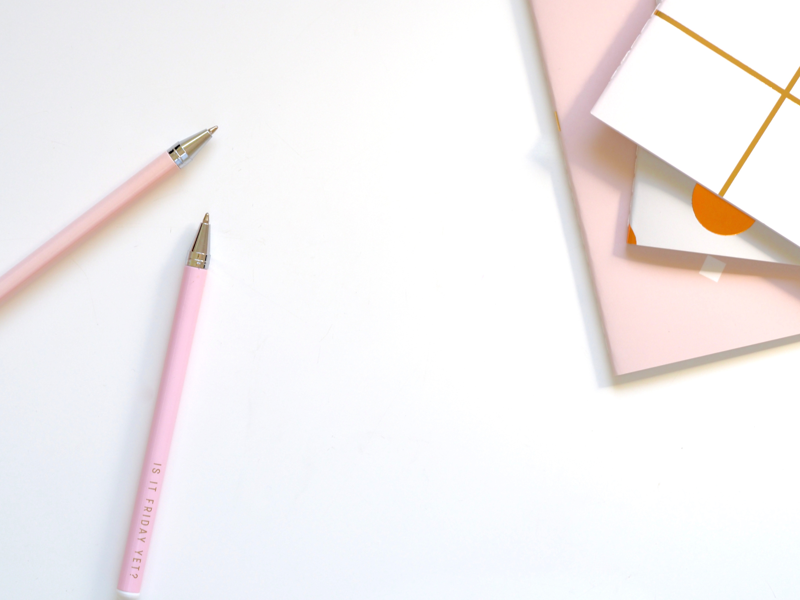

<mat-sidenav-container class="example-container">
    <mat-sidenav #sidenav mode="side" >
      
      <div class="">
        <button mat-button (click)="openPage('volunteers')">מתנדבים</button>
      </div>
      <div class="">
        <button mat-button (click)="openPage('dispatchers')">מוקדנים</button>
      </div>
      <div class="">
        <button mat-button (click)="openPage('managers')">מנהלים</button>
      </div>
      <div class="">
        <button mat-button (click)="logout()"> <mat-icon>logout</mat-icon> התנתק</button>
      </div>
    </mat-sidenav>
  <mat-sidenav-content style=" background-image: url('../../../assets/images/jess-watters-665170-unsplash.jpg');background-attachment: fixed;background-size: cover">
<!-- 
<div style="position: fixed;width: 100%; height: 5%;">
    
    <mat-toolbar>
      <div class="col-md-0">
        
        <button mat-button (click)="sidenav.toggle()"><mat-icon>menu</mat-icon></button>
        <a>שלום </a><a>{{user.FirstName}}</a>
      </div>
      <div class="offset-md-4 col-md-1">
        <strong>ידידים סיוע בדרכים | סטארטאח</strong>
      </div>
      <div class="offset-md-5 col-md-0">
        
      </div>
    </mat-toolbar>
  </div>
    <span>
    </span>
    <router-outlet></router-outlet>

  </mat-sidenav-content>
</mat-sidenav-container>